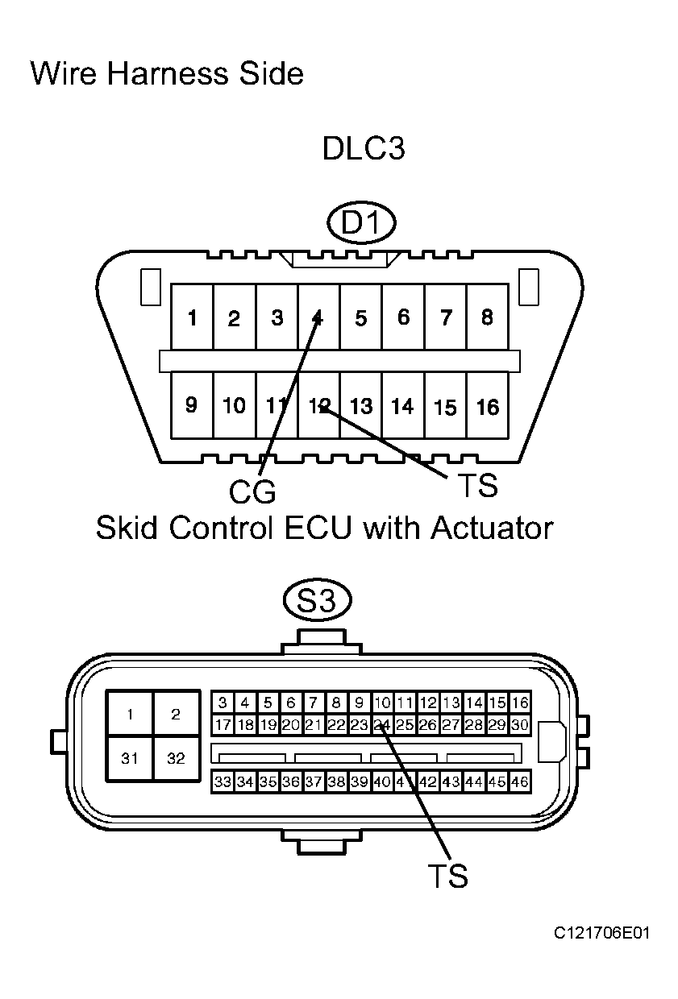

Inspection Procedure
- CHECK WIRE HARNESS (DLC3 - SKID CONTROL ECU AND BODY GROUND)
- Disconnect the D1 DLC3 connector.
- Disconnect the S3 ECU connector.
- Measure the resistance of the wire harness side connectors.
Standard resistance
TESTER CONNECTION SPECIFIED CONDITIONTester Connection Specified Condition D1-4 (CG) - Body ground Below 1 Ω D1-12 (TS) - S3-24 (TS) HINT:
When replacing the skid control ECU with actuator, perform the zero point calibration (see CALIBRATION ).
NG: REPAIR OR REPLACE HARNESS AND CONNECTOR

Courtesy of © TOYOTA, LICENSE AGREEMENT TMS1002OK: REPLACE BRAKE ACTUATOR ASSEMBLY